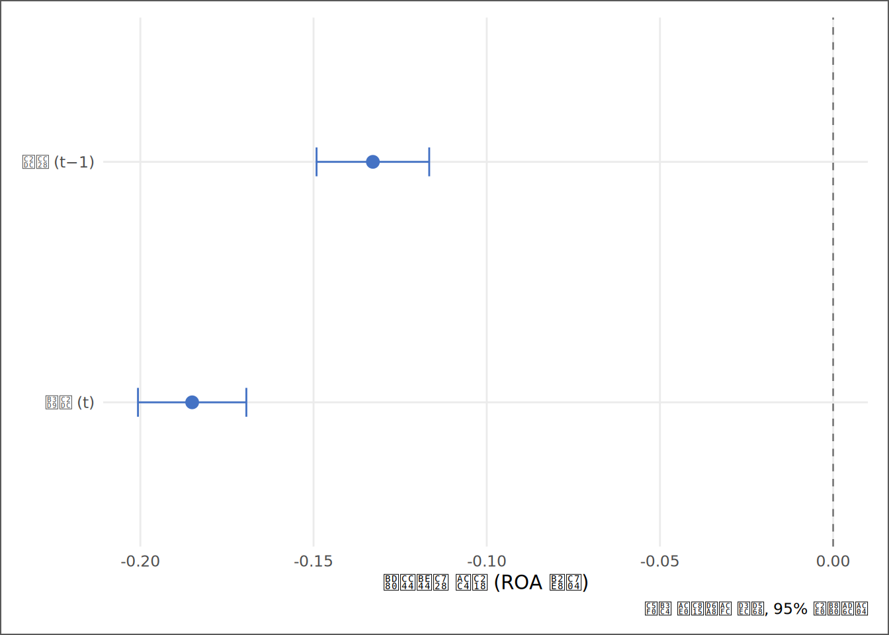
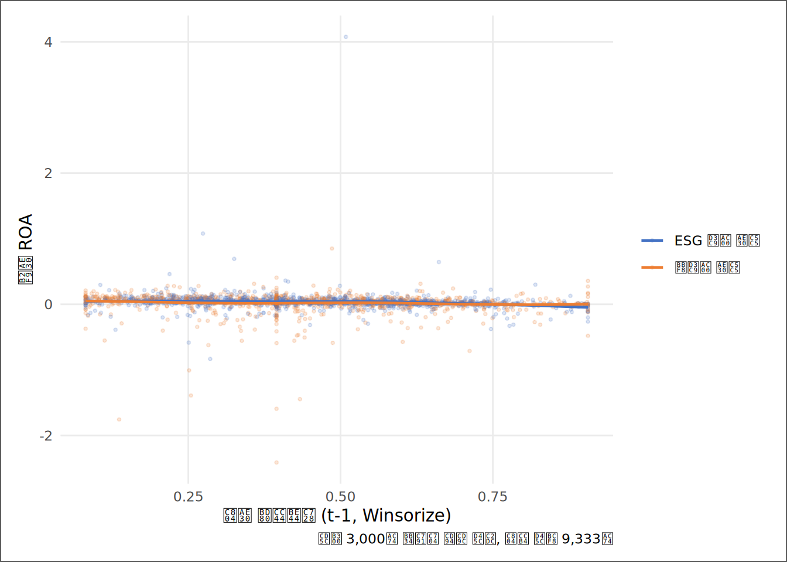

# | 키워드 | 한 줄 핵심 |
|---|---|---|
1 | 반사실 사고 (Counterfactual) | 인과의 핵심 — '만약 X가 없었다면 Y는 어땠을까'라는 상상의 비교대상 |
2 | 잠재적 결과 (Potential Outcome) | 같은 개체에 대해 처치·비처치 두 가지 결과를 동시에 볼 수 없다는 근본 문제 |
3 | 식별 (Identification) | 관측된 관계를 인과로 해석할 수 있는 논리적 조건을 만족시키는 과정 |
4 | 역인과 (Reverse Causality) | Y가 X에 영향을 준다는 가능성 — X→Y가 아니라 Y→X일 때 계수는 뒤집힌다 |
5 | 선택편의 (Selection Bias) | 처치 여부가 무작위가 아닐 때 — 누가 평가를 받는지 자체가 편향의 원천 |
6 | 시차 변수 (Lagged Variable) | 독립변수를 1기 이전 값으로 밀어 동시성 혼입을 약화시키는 첫 번째 수단 |
7 | 좋은 연구질문의 3조건 | 데이터로 답 가능 · 반증 가능 · 새로움 — 셋 다 충족해야 연구질문이다 |
인과의 문턱과 연구주제 발굴
“상관관계는 인과관계가 아니다 — 그러나 그것을 안다고 해서 인과를 포기해야 하는 것은 아니다. 더 높은 입증 기준을 알고 시도하라.” — Joshua Angrist·Jörn-Steffen Pischke
사례로 시작하기
KG Asset 내부 검증 메모가 투자위원회에 배포된 다음 날 아침, 자산은 팀장 방 앞에서 호출을 받았다.
“잘 했어. 외부 보고서의 회귀가 통제를 거치자 계수가 흔들린다는 것, 잘 잡았어.” 팀장의 목소리는 칭찬 쪽이었다. 그러나 문장은 거기서 끝나지 않았다. “그런데 CIO가 어제 한 가지를 물었어. 통제 후에도 관계가 남는다면, 그게 원인이냐고.”
자산은 10장에서 작성한 메모의 마지막 문장을 기억했다. “본 분석은 ESG 평가 여부의 인과효과 추정이 아니다.” 그 문장을 쓸 때는 단지 안전을 위한 면책 문구처럼 느껴졌다. 그런데 팀장이 지금 그 문장을 꺼냈다.
“CIO는 우리가 ’관계가 있다’는 결론보다 ’왜 그런가’를 알고 싶어 한다. 다른 부서 분석팀은 이미 ’인과효과’라는 단어를 보고서에 넣었더군. 그 팀이 맞는 건가, 아니면 네 메모의 면책 문구가 맞는 건가?”
재판으로 치면, 1심은 끝났다. 외부 보고서의 단순회귀는 증거 능력이 없다는 판결이 났다. 그런데 1심 판결이 나온 그 법정에, 상고 이유가 생겼다. 규모와 레버리지를 통제하고 남은 관계 — 그 0.00X의 조각이 인과인가, 여전히 관찰에 그치는가?
항소심의 입증 기준은 1심보다 훨씬 높다. 상관관계는 정황 증거다. 정황이 쌓여도 유죄 판결에는 부족하다. 법정이 요구하는 것은 반사실(counterfactual) — “이 피고가 없었다면 어떤 세계가 펼쳐졌을 것인가”에 대한 설득력 있는 시뮬레이션이다. 그것이 이 장의 주제다. 인과의 문턱이 어디에 있고, 그 앞에서 분석가가 할 수 있는 일이 무엇인지, 그리고 — 최종 보고서(13장)를 향해 달려가는 지금 — 자신의 질문을 어떻게 설계하는지를 다룬다.
핵심 키워드
학습 목표
이 장을 마치면 다음 여섯 가지를 할 수 있다.
- 반사실 사고의 논리를 설명하고, 관측 데이터에서 반사실이 왜 본질적으로 불완전한지 이해할 수 있다.
- 식별의 3대 적(누락변수편의·역인과·선택편의)을 ESG·부채비율·여성 고용 비율의 예에 적용해 각각의 편의 방향을 예측할 수 있다.
dplyr::lag()으로 시차 변수를 생성하고, 동시 회귀와 시차 회귀의 계수를 비교·해석할 수 있다.- 시차 회귀가 ’인과 식별 도구’가 아니라 ’시간 순서 점검 도구’임을 설명하고, 동태적 누락변수·잔존 역인과라는 잔존 한계를 인식할 수 있다.
- SSOT 데이터셋으로 답 가능한 연구질문 후보를 구성하고, 각 질문의 핵심 식별 위협을 명시할 수 있다.
- 자연실험·이중차분법·회귀불연속의 직관을 설명하고, 이 방법들이 언제 필요한지를 인식할 수 있다.
D→I→K→W 4단계 파이프라인
| 단계 | 이 장에서의 모습 |
|---|---|
| 데이터 (D) | 기업-연도 패널 — ROA, 부채비율_Win, Size, is_esg_rated, Female_Ratio, Loss_Dummy |
| 정보 (I) | 동시 회귀와 시차 회귀의 계수 차이 — “시간 순서를 고정하면 관계가 달라지는가” |
| 지식 (K) | 식별 위협의 진단 — “이 계수가 인과가 될 수 없는 이유와, 될 수 있는 조건” |
| 지혜 (W) | 연구주제 선택 — “이 질문을 어떻게 설계해야 13장 보고서가 신뢰받는가” |
데이터 출처와 수집
데이터 | 출처 | 핵심 변수 | 이 장의 역할 |
|---|---|---|---|
재무제표 패널 | DataGuide 5.0 (KOSPI·KOSDAQ 상장기업) | ROA, Size, 부채비율_Win, Loss_Dummy, ATO | 시차 회귀의 종속변수·통제변수 |
ESG 등급 | KCGS 등급 (DataGuide 제공) | ESG등급, is_esg_rated(평가 여부 더미), Female_Ratio | 식별 위협 예시 및 연구질문 후보의 핵심 변수 |
파생 변수 | 3~5장에서 구축한 SSOT 파이프라인 | 시차 파생: 부채비율_Win(t-1), is_esg_rated(t-1) | 동시성 혼입 완화 수단 |
3장에서 구축하고 4~5장에서 정제한 SSOT 데이터셋이 이 장에서도 그대로 쓰인다. 한 가지가 추가된다 — 시간 순서를 살린 시차 변수를 dplyr::lag()으로 파생한다. 표본이 바뀌지 않는 이유는 10장에서 이미 설명했다. 방법이 달라도 데이터가 같아야 방법 간 비교가 의미 있다.
상관과 인과 사이 — 반사실의 거리
인과 주장이 의미하는 것
10장에서 자산은 외부 보고서의 단순회귀에 통제를 거쳐 계수를 추적했다. 통제 후에도 관계가 살아남았다면 — 혹은 사라졌다면 — 그 분석가는 무언가를 배웠다. 그런데 팀장의 질문은 한 층 위다. 통제 후에도 살아남은 관계를 “인과”라고 불러도 되는가?
인과 주장은 이 질문에 답하는 것이다. “ESG 평가를 받는 것이 ROA를 높인다”고 말하려면, 같은 기업이 동시에 평가를 받는 세계와 받지 않는 세계를 비교할 수 있어야 한다. 이것이 반사실(counterfactual)이다. 현실에는 두 세계가 동시에 존재하지 않는다. A기업은 이 세계에서 평가를 받았거나, 받지 않았거나 — 둘 중 하나다. 관측되지 않는 쪽을 잠재적 결과(potential outcome)라고 부른다.
수식으로 나타내면 이렇다.
처치(T=1): Y_i(1) = ESG 평가를 받았을 때의 ROA
비처치(T=0): Y_i(0) = ESG 평가를 받지 않았을 때의 ROA
인과효과 = Y_i(1) - Y_i(0)문제는 한 개체 i에 대해 Y_i(1)과 Y_i(0)을 동시에 관측할 수 없다는 것이다 — 이것이 인과추론의 근본 문제(fundamental problem of causal inference)다. 10장의 회귀는 평가 기업의 평균 Y(1)과 미평가 기업의 평균 Y(0)을 비교했다. 이 비교가 인과효과를 줄 수 있으려면, 두 집단이 처치 이전에 같은 집단이어야 한다 — 즉, ESG 평가 여부가 무작위로 배정되었어야 한다. 현실에서 평가기관은 자료가 풍부한 대형사부터 평가한다. 3장에서 이미 목격한 선택의 문제다.
항소심의 입증 기준
1심(10장)은 “통제된 비교”로 단순한 평균 차이를 해소했다. 항소심(이 장)은 더 높은 기준을 요구한다 — 측정하지 못한 변수들, 시간 순서의 혼입, 처치 대상 선택의 비무작위성까지 설명할 수 있는가? 법정은 “피고(X)가 범행 현장 근처에 있었다”(상관)는 정황만으로 유죄를 선고하지 않는다. “피고의 행위(X)가 없었다면 결과(Y)가 발생하지 않았다”는 반사실을 설득력 있게 보여야 판결이 난다.
분석가가 이 기준을 안다는 것 자체가 첫 번째 실력이다. 한계를 알면서 분석하는 사람과, 한계를 모르고 인과 언어로 결론을 쓰는 사람 사이에는 보고서의 신뢰도에서 측정 가능한 차이가 생긴다.
식별의 3대 적 — 유죄 판결을 막는 세 가지 반론
식별(identification)이란 관측된 관계를 인과로 해석할 수 있는 조건을 갖추는 과정이다. 그 조건을 무너뜨리는 세 종류의 반론이 있다.
식별 위협 | 법정 비유 | SSOT 예시 | 부분 대응 |
|---|---|---|---|
① 누락변수편의 (OVB) | 제3의 범인이 있다 — 목격된 피고의 행동은 다른 원인의 결과일 뿐 | ESG 평가→ROA 추정 시 기업 규모(Size) 누락: 규모가 평가 여부와 ROA를 동시에 움직임 (10장에서 실증) | 통제변수 추가 (10장), 시차 변수 (이 장 §5) |
② 역인과 (Reverse Causality) | 피해자가 먼저 공격했다 — 원인과 결과의 방향이 반대 | ROA 높은 기업이 여유 자금으로 ESG 활동을 강화해 등급을 올린다면, is_esg_rated→ROA가 아니라 ROA→is_esg_rated | 독립변수를 1기 이전 값으로 — 미래의 Y가 과거의 X를 바꿀 수 없다 |
③ 선택편의 (Selection Bias) | 증인단이 편향되어 있다 — 처음부터 특정 기업만 선발된 표본 | KCGS는 대형 상장사부터 평가: ESG 평가군과 ESG 미평가군은 처음부터 같은 종류의 기업이 아님 (3장에서 선택편향 실증) | 표본 제한(평가 기업 내 등급 비교), 신규 편입 기업 전후 비교(준실험) |
세 위협은 순서대로 읽으면 이 책의 흐름과 겹친다. OVB는 10장에서 통제된 비교로 맞섰다. 역인과는 시간의 순서로 맞선다 — 과거의 X가 미래의 Y를 바꿀 수는 있어도, 미래의 Y가 과거의 X를 바꿀 수는 없기 때문이다. 선택편의는 3장에서 이미 직면한 문제다 — ESG 평가군과 ESG 미평가군이 크기부터 다르다는 것, 그 자체가 편향의 출발점이다. 세 위협을 동시에 완전히 제거하는 방법은 관측 데이터에서는 존재하지 않는다. 분석가의 임무는 완전한 제거가 아니라, 어떤 위협이 얼마나 남아 있는지를 정직하게 명시하는 것이다.
역인과 — 시간이 말해주는 것과 말해주지 않는 것
역인과의 예를 하나 더 보자. 11장에서 만든 적자 예측 모형에서 부채비율_Win은 Loss_Dummy의 강한 예측변수였다. 이 관계는 “부채가 높아서 적자가 났다”는 방향인가, 아니면 “적자가 누적되어 부채비율이 올라갔다”는 방향인가? 데이터에는 두 방향이 동시에 섞여 있다. 그리고 단순히 통제변수를 많이 쌓아도 이 혼입은 사라지지 않는다.
시차 변수는 역인과를 약화시키는 수단이다. 전기(t-1)의 부채비율이 당기(t)의 ROA보다 미래에 올 수 없다는 것은 시간의 법칙이다. 그래서 X를 1기 앞의 값으로 밀면, 최소한 “당기 ROA가 전기 부채비율을 바꿨다”는 역인과의 한 고리를 끊을 수 있다. 이것이 다음 절 실증의 논리다. 시차는 인과 식별이 아니라 시간 순서 점검이다 — lag는 누락변수나 동태적 선택을 제거하지 못한다.
시차 변수 — 동시성 완화의 첫 걸음
코드와 직관
10장 PBL의 가이드라인 6번이 이 절의 출발점이다. “시차 모형을 상상해 보라(dplyr::group_by(코드) 후 dplyr::lag()) — 12장 인과추론의 예고편이다.” 예고편을 본편으로 만들 차례다.
# ① SSOT 적재 및 기본 변수 선택
ssot_raw <- read_book_csv(ssot_path)
lag_df <- ssot_raw |>
dplyr::transmute(
코드, 코드명, 회계연도,
ROA,
Size,
부채비율 = 부채비율_Win,
ESG평가 = is_esg_rated,
Loss_Dummy
) |>
tidyr::drop_na(ROA, Size, 부채비율, ESG평가) |>
dplyr::arrange(코드, 회계연도) |> # ② 기업 내 시간 순서 확보
dplyr::group_by(코드) |>
dplyr::mutate(
부채비율_lag1 = dplyr::lag(부채비율, 1), # ③ 전기(t-1) 부채비율
ESG평가_lag1 = dplyr::lag(ESG평가, 1), # ③ 전기(t-1) ESG 평가 여부
n_연도 = dplyr::n()
) |>
dplyr::ungroup() |>
dplyr::filter(n_연도 >= 2) |> # ④ 최소 2개 연도 보유 기업만
tidyr::drop_na(부채비율_lag1) # ⑤ 시차 결측(첫 연도) 제거코드 읽기. ①에서 SSOT를 불러온 뒤, transmute()로 이 장에서 쓸 변수들만 골라낸다 — 9개 열로 좁히는 것은 메모리 절약보다 분석 대상을 명확히 선언하는 역할이다. ②의 arrange(코드, 회계연도)가 결정적으로 중요하다. dplyr::lag()은 데이터프레임의 위 행을 가져오는 함수이므로, 행이 기업·연도 순으로 정렬되어 있지 않으면 엉뚱한 행의 값이 “전기 값”으로 들어온다. 시차 변수 생성 전 정렬은 선택이 아니라 필수다. ③에서 group_by(코드) 안에 lag()을 쓰는 이유가 여기 있다 — 기업 A의 2020년 값이 기업 B의 2021년 값과 연결되어서는 안 되고, 같은 기업 내에서만 전기·당기가 연결되어야 하기 때문이다. ④는 연도가 1개뿐인 기업을 제거한다 — 시차가 생성되려면 최소 2개 연도가 필요하다. ⑤의 drop_na(부채비율_lag1)은 각 기업의 첫 번째 연도(전기 값이 없어 NA가 생기는 행)를 자동으로 제거한다.
시차 표본은 2011년부터 2024년까지, 667개 기업의 기업-연도 관측치 9,333건이다. 원래 표본(10장)보다 관측치가 줄어드는 것은 각 기업의 첫 연도가 제거되기 때문이며, 분석 결과의 차이가 방법(시차)의 차이인지 표본의 차이인지 구분하기 위해 이 점을 보고서에 명시해야 한다.
동시 회귀 vs 시차 회귀
같은 표본(lag_df) 위에서 동시 모형과 시차 모형을 겨루게 한다. 변수는 부채비율과 ROA의 관계에 집중한다 — 역인과가 가장 강하게 의심되는 쌍이기 때문이다.
# ① 동시 모형: 당기 부채비율 → 당기 ROA
m_contemp <- lm(ROA ~ 부채비율 + Size + factor(회계연도),
data = lag_df)
# ② 시차 모형: 전기(t-1) 부채비율 → 당기 ROA
m_lag1 <- lm(ROA ~ 부채비율_lag1 + Size + factor(회계연도),
data = lag_df)
# ③ 비교표를 위한 계수 추출
tidy_c <- broom::tidy(m_contemp)
tidy_l <- broom::tidy(m_lag1)코드 읽기. 두 모형의 차이는 단 하나 — 독립변수의 시간이다. ①은 당기 부채비율, ②는 부채비율_lag1(전기 값)을 넣는다. factor(회계연도)는 두 모형 모두에 넣어 공통 연도 충격을 일부 흡수한다(다만 산업별·기업별로 다른 충격은 남는다) — 7장에서 확인한 연도 간 ROA 변동성이 시차 분석에서도 혼입될 수 있기 때문이다. ③의 broom::tidy()는 10장에서 배운 것과 같은 함수다 — 이처럼 분석 단계가 달라져도 결과를 정리하는 도구는 동일하다. 패턴이 반복되는 이유는 편리함이 아니라, 서로 다른 모형의 결과를 같은 형식으로 비교하기 위해서다.
모형 | 계수 | 표준오차 | t값 | p값 | 해석 |
|---|---|---|---|---|---|
동시 모형 (부채비율_t → ROA_t) | -0.1850 | 0.0080 | -23.18 | 0 | 5% 유의 — 동시성 혼입 포함 |
시차 모형 (부채비율_{t-1} → ROA_t) | -0.1329 | 0.0083 | -16.02 | 0 | 5% 유의 — 역인과 고리 약화 |
모형 | 기업 클러스터 SE |
|---|---|
동시 회귀 | 0.01819727 |
시차 회귀 | 0.01614223 |
표 12.4가 이 절의 심장이다. 부호(음(−))는 유지되면서 절댓값이 0.0522 줄어들었다 — 동시성 혼입의 일부가 걷힌 것으로 볼 수 있다. 동시 모형은 1% 수준에서 통계적으로 유의하다. 시차 모형은 1% 수준에서 통계적으로 유의하다. 이 이동이 말하는 것은 하나다 — 동시에 관측된 X와 Y의 관계에는 방향이 섞여 있고, 시간의 순서가 그 혼입의 일부를 걸러낸다.

그림 12.1을 읽는 요령 하나 — 두 점이 같은 방향에 있는가, 아니면 0을 사이에 두고 반대쪽에 있는가. 방향이 같다면 역인과가 크기를 바꿨을 뿐이고, 방향이 다르다면 역인과가 결론을 바꿨다는 뜻이다. 어느 쪽이든, 동시 모형만 보고서에 싣는 것이 왜 불완전한지가 이 그림 한 장으로 드러난다.
시차의 한계 — 예고된 함정
시차를 넣으면 역인과가 해소된다는 믿음이 가장 흔한 오해다. 시차는 동시성을 끊는다. 그러나 세 가지 위협이 여전히 남는다.
첫째, 시간적 역인과는 제거되지 않는다. 과거의 ROA가 과거의 부채비율을 결정했을 수 있고, 그 결과가 현재 표본에 잔류한다. 둘째, 선택편의는 더욱 강해질 수 있다. 오래 생존한 기업만이 시차 표본에 남으므로, 재무 상태가 심각했던 기업은 표본에서 사라진다 — 이것이 생존편의(survivorship bias)다. 셋째, 측정하지 못한 기업 고유의 특성(경영진 역량, 사업 모델의 강인성)이 과거 부채비율과 현재 ROA를 동시에 설명할 수 있다 — 관측 불가능한 변수는 시차를 써도 제거되지 않는다.
시차 회귀는 인과 식별 도구가 아니라 시간 순서 점검 도구다 — X가 Y보다 시간적으로 앞선다는 최소 조건을 확인하는 것이 전부이며, 그 이상의 주장은 과잉 추론이다. 위 세 위협 외에도 두 가지가 더 남는다. 동태적 누락변수(time-varying confounders): 경영전략·사업 구조처럼 매년 변화하는 기업 특성이 전기 부채비율과 당기 ROA를 동시에 움직인다면, 그 시변(time-varying) 층위의 편의는 시차로 제거되지 않는다 — 이는 ‘시간 불변 기업 특성’(셋째 위협)과 다른 층위의 문제다. 잔존 역인과(residual reverse causality): 전기 ROA가 전기 부채비율을 결정했다면, ’(t-1)ROA → (t-1)부채비율 → (t)ROA’의 간접 경로가 시차의 방어막을 우회해 계수에 혼입된다. 다음 절의 자연실험이 이 간격을 좁히는 방향이다.
연구주제 발굴 — 좋은 질문이 좋은 분석을 만든다
좋은 연구질문의 3조건
질문이 나쁘면 분석이 좋아도 결론이 나쁘다. 이 장은 그 역방향 — 좋은 질문을 먼저 설계하고 분석을 그 틀에 맞추는 과정을 훈련한다.
좋은 연구질문의 조건은 세 가지다.
- 데이터로 답 가능하다. 갖고 있는 변수로 검증 가능한 형태의 질문이어야 한다. “ESG가 사회에 좋은가”는 좋은 연구질문이 아니다 — 측정 가능한 결과 변수(ROA, Loss_Dummy)와 연결되지 않는다.
- 반증 가능하다. “부채비율이 높으면 ROA가 낮다”는 관계가 아니라, “전기 부채비율이 높은 기업은 당기 ROA가 낮다”처럼 데이터가 틀렸다고 말할 수 있는 형태여야 한다. 아무 결과가 나와도 지지되는 주장은 검증이 아니라 확증 편향이다.
- 새롭다. 이미 알려진 관계의 재현(예: “규모가 클수록 수익성이 높다”)이 아니라, 이 데이터셋에서 이 분석가만이 볼 수 있는 각도를 찾아야 한다. 완전히 새로울 필요는 없다 — 기존 결과를 이 표본·이 시기·이 변수 조합으로 점검하는 것도 새로움이다.
SSOT 변수로 실증 가능한 연구주제 후보 점검 (실데이터 분석 ②)
연구질문 | 필요 변수 | SSOT 가용성 | 핵심 식별 위협 | 식별 전략 후보 |
|---|---|---|---|---|
ESG 등급이 높을수록(A>B>C>D) 다음 해 ROA가 높은가 | ESG등급(수준), is_esg_rated, ROA, Size, 시차 | 부분 가능 — ESG등급은 평가 기업만 존재(NA 다수), 등급 수준 분석은 표본 축소 감수 | 역인과(ROA→ESG 투자→등급 상승), 규모·업종 선택편의 | 신규 등급 편입 기업의 편입 전후 비교(준실험적 접근) |
여성 고용 비율이 높은 기업은 다음 해 적자 전환 확률이 낮은가 | Female_Ratio, Loss_Dummy, Size, 부채비율_Win, 시차 | 가능 — Female_Ratio·Loss_Dummy 모두 존재 | 역인과(수익성 높은 기업이 여성 친화 정책 여력 있음), 산업 구조 누락 | 시차 모형(Female_Ratio_{t-1} → Loss_Dummy_t) + 기업 고정효과 |
전기 부채비율이 높은 기업은 당기 ROA가 낮은가 | 부채비율_Win(t-1), ROA, Size, 코드(클러스터) | 가능 — 이 장 §5에서 실증 완료 | 생존편의(지속 기업만 남음), 기업 고유 특성(관측 불가) | 시차 모형(구현 완료) — 기업 고정효과 추가 시 잔여 상관 확인 |
표 12.5의 마지막 열이 핵심이다. 식별 전략이 없는 연구질문은 흥미로울 수 있어도 보고 가능한 결론을 만들지 못한다. 3번 질문은 이미 이 장에서 시차 회귀로 실증했다. 1번과 2번은 13장 최종 보고서의 후보 — 어느 질문을 가져갈지는 식별 위협에 대한 설득력 있는 대응을 갖추었는가로 결정해야 한다.

그림 12.2는 이 절 전체의 요약이다. 가로축은 전기 부채비율(t-1), 세로축은 당기 ROA — 시차 구조 자체를 시각화했다. 두 집단(ESG 평가 여부)의 추세선 기울기와 수준 차이를 눈으로 확인하면, 표 12.4의 숫자가 어디서 왔는지가 직관적으로 보인다. 추세선이 비선형으로 구부러진다면, 부채비율의 높은 구간에서 관계의 성질이 달라진다는 신호이므로 — 그 구간을 구분한 하위표본 분석이 다음 수가 된다.
자연실험의 직관 — 인과에 가장 가까이 가는 길
시차 변수 다음의 수는 무엇인가. 인과 추론의 정규 도구들 — 이중차분법(Difference-in-Differences, DiD), 회귀불연속(Regression Discontinuity, RD), 도구변수(Instrumental Variables, IV) — 이 있다. 이 방법들의 공통된 논리는 하나다. 처치 여부가 사람이나 기업의 선택이 아니라, 외생적 사건(법 개정·임계값 통과·자연재해)에 의해 결정된 상황을 찾는 것이다. 이때 처치는 무작위에 가까워지고, 반사실의 논리가 살아난다.
예를 들어 특정 연도에 ESG 공시 의무화 법령이 시행되었다면, 그 법의 적용 기준선 바로 위와 아래의 기업들은 규모·업종·재무 특성이 유사하지만 처치 여부가 다르다 — 이것이 회귀불연속의 씨앗이다. 또는 특정 업종에만 적용된 규제 강화가 있었다면, 강화 전후·업종 안팎의 2×2 비교가 이중차분의 씨앗이다. 이 방법들은 이 책의 범위를 넘지만, 분석가는 데이터를 보기 전에 “이 환경에서 준실험적 변이를 만들어낸 사건이 있었는가” 를 먼저 물어야 한다. 그 질문 자체가 인과 사고의 시작이다.
아래 표는 방법 선택의 지도다. 자신의 분석 질문과 데이터 조건을 비교해, 어느 방법이 현실적으로 실행 가능한지 — 또는 왜 대부분 불가능한지 — 를 한눈에 확인한다.
인과추론 방법 선택 지도 — 핵심 아이디어·필요 데이터 조건·이 책 데이터로의 실행 가능성
| 방법 | 핵심 아이디어 | 필요한 데이터 조건 | 이 책 데이터로 가능한가 |
|---|---|---|---|
| DID (이중차분법) | 처치군·비처치군의 전후 변화량 차이를 비교 — 비처치군의 추세를 반사실로 사용 | 외생적 처치 사건(법 개정·정책 시행), 처치 전 병행 추세, 외부 배정에 의한 처치·비처치 구분 | 불가 — SSOT에 외생적 처치 사건 없음; ESG 평가는 기업 자발적 선택이라 처치 배정이 무작위가 아님 |
| RD (회귀불연속) | 공식 임계값 직전·직후 기업을 비교 — 임계값 통과 여부만 다르고 나머지 특성은 연속적으로 유사 | 규칙 기반 임계값(자산 규모·지수 편입 기준 등) + 기업이 임계값 자체를 조작할 수 없는 조건 | 불가 — KCGS ESG 평가 기준이 공개된 점수 임계값으로 구성되지 않아 불연속 설계 불가 |
| IV (도구변수) | X에만 영향을 주고 Y에는 X를 통해서만 영향을 주는 도구 변수 Z를 찾아 내생성을 제거 | 관련성(Z→X)·배제 제약(Z→Y 직접 경로 없음)·외생성(Z와 오차 무상관)의 세 조건 동시 충족 | 불가 — SSOT 변수 중 배제 제약을 납득시킬 외생 변수 없음; 적합한 도구 변수 후보 미존재 |
| PSM (성향점수매칭) | 처치 확률(성향점수)이 같은 처치·비처치 기업을 매칭해 관측 가능한 선택편의를 제거 | 처치 여부를 결정하는 변수를 충분히 관측해야 함; 미관측 변수의 선택편의에는 무력 | 부분 가능 — ESG 평가 여부를 Size·부채비율·연도로 매칭 가능; 단, 미관측 특성에 의한 선택편의는 잔존 |
| FE (기업 고정효과) | 기업마다 고정된 이질성(경영진 역량·기업 문화 등)을 기업 더미로 흡수 — 기업 내 시간 변동만 식별에 이용 | 동일 기업을 반복 관측한 패널 데이터(T ≥ 2) | 가능 — SSOT가 기업-연도 패널로 구성; 단, 시간 불변 변수(업종 더미 등)는 고정효과와 공선 |
| 시차 회귀 | 독립변수를 1기 이전 값으로 밀어 동시성 혼입 약화 — 미래의 Y가 과거의 X를 바꿀 수 없다는 시간 비대칭 이용 | 기업-연도 패널 + 기업당 최소 2기 관측 | 가능 (단, 시간 순서 점검 도구) — 이 장에서 구현; 동태적 누락변수·잔존 역인과는 해소되지 않음 |
| fixest / plm | 다중 고정효과의 표준 도구 — 기업·연도·산업 고정효과를 lm()+factor() 대비 대규모 패널에서 효율적으로 추정 | 기업-연도 패널(기본 조건은 FE와 동일); R 패키지 추가 설치 필요 | 이 책 범위 밖의 다음 단계 — 이 책에서 익힌 lm() 기반 FE를 마친 뒤 자연스러운 확장 경로 |
분석가의 번역 — 이 숫자는 의사결정에서 어떻게 말하는가
숫자 | 통계적 해석 | 실무 번역 |
|---|---|---|
동시 모형 계수 -0.1850 | 당기 부채비율과 ROA의 동시 조건부 관계 (방향: 음(−)) | 동시 측정 계수를 인과효과라 부르면 안 된다 — 역인과가 섞여 있다 |
시차 모형 계수 -0.1329 | 전기 부채비율이 당기 ROA와 갖는 시차 조건부 관계 (방향: 음(−)) | 방향은 유지 — 역인과가 효과를 부풀렸을 가능성, 시차 계수가 더 보수적 추정 |
계수 이동: -0.1850 → -0.1329 | 역인과·동시성 혼입의 제거 효과 — 시간 순서 고정 전후 차이 | 부호(음(−))는 유지되면서 절댓값이 0.0522 줄어들었다 — 동시성 혼입의 일부가 걷힌 것으로 볼 수 있다 |
시차 모형 p값 0.0000 | 1% 수준에서 통계적으로 유의하다 (연도 고정효과 포함) | 시차 관계가 살아남았다 — 단, 인과 단정은 아직 금지 |
연구주제 가용성 (표 12.5) | 데이터로 답 가능한 질문의 범위와 한계 | SSOT 변수 범위 내 3개 후보 모두 실증 착수 가능 — 단, 각각의 식별 전략 준비 필수 |
남은 식별 위협 | 생존편의·기업 고유 특성·장기 역인과 | 결론 문장에 '본 분석은 관측 연구이며 인과효과 추정이 아님'을 명시한다 |
완성 예시 — 연구 계획 메모 전문
KG Asset 내부 연구 계획 메모 — 12주차 분석 업데이트
제목. 부채비율→ROA 시차 관계 검증 및 13장 연구주제 선정
시차 검증 결과. 시차 모형 계수(-0.1329)가 동시 모형 계수(-0.1850)보다 절댓값이 작다. 동시 추정에는 역인과 혼입이 있었을 가능성이 있으며, 시차 계수를 더 보수적 기준으로 채택한다. 시차 모형 기준 부채비율_{t-1}의 계수는 -0.1329, p값 0.0000으로 1% 수준에서 통계적으로 유의하다. 공통 연도 충격은 일정 부분 흡수했지만, 산업별·기업별로 다른 충격은 여전히 남을 수 있다.
식별 한계. 본 시차 회귀는 동시성 혼입을 약화시키지만, ① 생존편의(표본 내 기업은 해당 기간을 버텼다), ② 기업 고유 특성(경영 역량 등 관측 불가 변수)에 의한 편의는 제거되지 않는다. “부채비율이 ROA를 낮춘다”는 방향 주장은 가능하지만, 그 크기가 경제적 의미에서 신뢰할 만한 인과효과 추정치라고 단정하지 않는다.
13장 연구주제 후보. 표 12.5의 3개 후보 중, ③ 전기 부채비율→당기 ROA 시차 분석은 이 장에서 실증 완료되어 13장 보고서의 “방법·결과” 절 부품으로 편입한다. 추가 분석 후보로 ② 여성 고용 비율→적자 전환 시차 로지스틱 모형을 제안한다 — Female_Ratio_{t-1}과 Loss_Dummy_t를 11장의 로지스틱 프레임워크로 연결하면 두 장의 방법이 하나의 분석에서 만난다.
다음 행동. 13장 보고서 골격 작성 시 이 메모의 시차 분석 결과(
ch12_lag_comparison.csv)와 연구주제 점검표(ch12_topic_candidates.csv)를 부품으로 참조한다.
한계와 식별 위협(Threats to Identification)
이 절은 시차 회귀가 어디까지를 말할 수 있고 어디서 멈춰야 하는지를 정리한다.
R로 직접 해보기
| IPO | 내용 |
|---|---|
| Input | In_class_R/11주차/Derived_SSOT_Dataset.csv (3~5장 SSOT 파이프라인 산출) |
| Process | 기업·연도 정렬 → dplyr::lag() 시차 변수 생성 → 동시·시차 회귀 비교 → 계수 플롯 → 연구주제 후보 점검표 작성 |
| Output | Output/ch12_lag_comparison.csv, Output/ch12_topic_candidates.csv, 계수 비교 그림 (본문 렌더) |
| Report | 13장 최종 보고서의 “방법·강건성” 절 부품 — 시차 회귀 비교표와 연구주제 선정 근거 |
난이도 | 분석 아이디어 | 확인 포인트 |
|---|---|---|
초심자 | Female_Ratio_{t-1} → ROA_t 시차 회귀를 동시 회귀와 비교하고 계수 이동을 해석한다 | 부호가 바뀌는가, 크기가 줄어드는가 — 이유를 역인과 논리로 |
초심자 | 시차 2기(부채비율_{t-2})를 넣어 효과가 지속되는지, 희석되는지 확인한다 | lag2 계수가 lag1보다 크면 관계(계수)가 누적, 작으면 희석 — 어느 쪽이 경제적으로 타당한가 |
초심자 | Loss_Dummy 기업과 흑자 기업을 분리해 시차 관계가 하위 집단에서 달라지는지 본다 | 손실 기업에서 더 강한 관계? — 재무적 제약 이론과 연결 |
고급자 | 기업 고정효과(factor(코드))를 시차 모형에 추가해 관측 불가 이질성을 흡수한다 — 단, 대규모 패널에서 factor(코드)는 메모리 부담이 크므로 상위 표본으로 먼저 시험하고, 표준오차는 기업 클러스터 기준으로 본다 | 고정효과 추가 전후 계수 변화 — 기업 이질성이 얼마나 설명했는가 |
고급자 | ESG평가 신규 편입 기업(직전 연도 ESG평가=0, 당해 ESG평가=1)을 추출해 편입 전후 ROA를 비교한다 | 준실험 설계의 첫 걸음 — 편입 기업이 정말 처치 전후로 다른가 |
AI 협업 프로토콜 — 인과 주장을 대신 써주지 말고, 식별 위협을 더 찾아라
이 장에서 AI를 쓰는 전략은 한 문장이다. AI는 식별 위협 목록을 늘리는 브레인스토밍 파트너이고, 인과 결론을 내리는 주체가 아니다. AI는 모형 결과를 주면 언제나 인과처럼 들리는 해석을 생성한다. 그것이 AI의 편향이고, 분석가의 임무는 그 해석에서 인과 언어를 걷어내는 것이다.
수준 | 이 장의 행동 |
|---|---|
L1 (인식) | AI에게 '시차 회귀 결과를 해석해줘'라고 표를 넘기고 인과 해석을 받아 그대로 옮긴다 |
L2 (적용) | 변수 정의와 시차 구조를 설명한 뒤 '이 모형의 식별 위협 3가지를 찾아줘'라고 요청한다 |
L3 (분석) | AI가 제시한 위협 중 SSOT 변수로 검증 가능한 것은 직접 데이터에서 확인하고, 불가능한 것은 한계로 명시한다 |
L4 (창의) | AI와 함께 연구주제의 자연실험 가능성을 토론하고, 가장 설득력 있는 준실험 설계를 스케치한다 |
두 개의 프롬프트로 충분하다. 그대로 복사해 쓰라.
[프롬프트 1 — 분석 전: 식별 위협 수색] “전기 부채비율(t-1)이 당기 ROA(t)와 갖는 조건부 관계를 추정하는 시차 회귀 모형의 주요 식별 위협을 다섯 가지 제시하고, 각각이 계수를 어느 방향으로 왜곡할지 근거와 함께 예측해줘. 데이터에는 산업코드가 없으며, 기업-연도 패널이다.”
[프롬프트 2 — 분석 후: 결론 반대신문] “다음 시차 회귀 비교표를 보고 (1) 시간 순서 고정의 효과 (2) 남은 식별 위협 (3) 이 결과를 13장 보고서에서 어떤 문장으로 서술해야 하는지 세 줄로 평가해줘. 인과 표현을 쓰지 말고 ’조건부 관계’로 서술해줘.” AI의 답에서 “~의 효과”, “~를 높인다”는 표현이 나타나면 반드시 “~와 조건부로 관련된다”로 고쳐 쓰라 — 그 교정 작업 자체가 L3와 L1의 차이다.
| AI에게 맡겨도 되는 일 | 사람이 반드시 판단해야 하는 일 |
|---|---|
| 식별 위협 후보 브레인스토밍 | 어느 위협이 이 데이터에서 더 심각한가 |
| 시차 코드 오류 진단 | 표본 제외 기준과 시차 기간 선택 |
| 결과 문장의 인과 표현 색출 | 인과 언어를 쓸 수 있는 조건인지 판단 |
| 자연실험 아이디어 나열 | 실제 데이터로 실현 가능한가 |
| 연구주제 초안 구조 점검 | 식별 전략의 설득력 최종 판단 |
정리, 함정, 다음 장
이 장의 판결문은 10장보다 짧지 않지만 더 불편하다. 인과를 주장하는 조건은 우리가 갖고 있는 관측 데이터 위에서는 거의 항상 부분적으로만 충족된다. 시차 변수는 동시성을 끊는다. 통제변수는 관측 가능한 혼입을 걷는다. 기업 고정효과는 관측 불가능한 이질성의 일부를 흡수한다. 그러나 반사실을 완전히 재현하는 방법은 무작위 배정뿐이고, 주식시장에서 기업에게 ESG 평가를 무작위로 배정할 수는 없다. 분석가가 이 사실을 알고 한계를 정직하게 명시하는 것 — 그것이 신뢰받는 보고서와 그렇지 않은 보고서의 가장 큰 차이다.
이 장 전체를 통해 세 갈래가 합류했다. 9장에서 그린 상관의 별자리가 인과의 출발점이었다. 10장에서 재판에 세운 통제된 비교가 입증의 1심이었다. 11장에서 연습한 강건성 사고방식 — “이 결론이 무너지는 조건은 어디인가” — 이 이 장의 식별 위협 분석과 같은 정신이다. 세 장의 훈련이 모여 이 장에서 하나의 질문을 만든다. “나는 무엇을 주장할 수 있고, 무엇을 주장할 수 없는가.”
많은 분석가들이 빠지는 함정 세 가지를 기억하라.
- 통제변수를 늘리면 인과가 된다는 믿음. 관측 가능한 변수를 아무리 쌓아도, 관측 불가능한 변수는 제거되지 않는다. 계수가 안정적이라는 것은 “이 통제변수들에 대해서는 강건하다”는 것이지, 인과효과를 식별했다는 뜻이 아니다.
- 시차를 넣으면 끝이라는 믿음. 시차 회귀는 인과 식별 도구가 아니라 시간 순서 점검 도구다. 동시성은 끊지만, 생존편의·동태적 누락변수·잔존 역인과는 그대로 남는다.
- 답 못 하는 질문을 붙드는 것. 멋진 질문이지만 현재 데이터로 반증할 수 없다면, 그 질문은 아직 연구질문이 아니다. 좋은 질문을 포기하는 것이 아니라, 지금의 데이터로 답할 수 있는 형태로 다듬는 것이 실력이다.
점검 항목 | 통과 기준 |
|---|---|
동시 모형과 시차 모형을 나란히 보고하고 계수 이동을 해석했는가 | 표 12.4 형식의 비교표 제시 |
역인과의 가능성을 방향과 함께 서술했는가 | 역인과 방향 예측 + 시차 도입 후 계수 변화로 확인 |
선택편의(누가 처치를 받는가)를 데이터 수준에서 점검했는가 | 3장 선택편향 분석 결과 콜백 또는 신규 점검 |
연구주제 후보가 좋은 질문의 3조건(답 가능·반증 가능·새로움)을 충족하는가 | 3조건 체크리스트 명시 |
식별 위협을 한계 절에 정직하게 명시했는가 | 한계 절 1문단 이상, 식별 위협 최소 2개 |
결론 문장에서 인과 표현('~의 효과', '~를 높인다')을 모두 걷어냈는가 | 결론에 '조건부 관계' 또는 '단순 기울기' 사용 |
분야 | 같은 구조의 질문 |
|---|---|
마케팅 분석 | 광고비 증가와 매출 증가 — 광고를 늘려서 매출이 올랐나, 매출이 올라 여유가 생겨 광고를 늘렸나 |
인사 분석 | 교육 이수와 성과 향상 — 교육이 성과를 올렸나, 고성과자가 교육 기회를 더 얻나 |
공공 정책 | 보조금 수혜와 고용 증가 — 보조금이 고용을 늘렸나, 고용을 늘릴 계획인 기업이 보조금을 신청하나 |
의료 통계 | 복약 순응도와 회복 — 순응도가 회복을 만드나, 빠른 회복이 순응도를 높이나 |
신용 리스크 | 신용교육과 연체율 하락 — 교육이 연체를 줄이나, 재무 의식이 높은 사람이 교육을 이수하나 |
이 장의 산출물(ch12_lag_comparison.csv, ch12_topic_candidates.csv)은 13장 최종 보고서의 “방법·결과·강건성” 절의 부품이 된다. 특히 연구주제 후보 점검표(표 12.5)는 13장에서 최종 주제를 선정하는 논리적 근거로 바로 활용된다. 그리고 3장에서 처음 발견된 손실 기업의 편향 구조, 5장에서 만든 Female_Ratio 파생변수, 7장에서 식별한 충격 연도의 그림자 — 세 장에 걸쳐 쌓인 미해결 질문들이 이 장의 연구주제 후보로 모두 수렴했다. 다음 장(13장)은 그 질문들 중 하나를 골라 임원 앞에 서는 과정이다. 숫자를 결론으로 번역하는 마지막 훈련이 기다린다.
주차 PBL — 나만의 질문을 법정에 세워라
이 장의 핵심 훈련은 분석 기술이 아니라 질문 설계다. 본문에서는 부채비율의 시차 관계를 법정에 세웠다. PBL에서는 여성 고용 비율(Female_Ratio)과 적자 전환(Loss_Dummy)의 관계를 법정에 세운다.
Context. 11장에서 만든 로지스틱 모형이 적자 기업을 예측하는 데 Female_Ratio를 변수 후보에 올렸다. CIO는 “여성 고용 비율이 높은 기업이 덜 망한다면, 그게 우리 포트폴리오 스크리닝 기준이 될 수 있다”고 했다. CRO는 즉시 반론한다. “그거 역인과 아닙니까? 수익성 좋은 기업이 여성을 더 많이 고용할 여유가 있는 것 아닙니까?” 임무는 시차 변수를 써서 CRO의 반론을 데이터로 대면하는 것이다.
| 단계 | 미션 | 핵심 |
|---|---|---|
| Level 1 (필수) | 시차 변수 생성 및 비교 | dplyr::lag(Female_Ratio, 1) 생성 → 동시 모형 vs 시차 모형(로지스틱) 계수 비교 |
| Level 2 (심화) | 식별 위협 진단 | 역인과·선택편의·누락변수 중 어느 위협이 가장 크고, 시차가 어느 위협을 약화시키는지 서술 |
| Level 3 (확장) | 연구주제 구체화 | 표 12.5 형식으로 이 질문의 필요 변수·SSOT 가용성·식별 위협·전략을 1행으로 작성 |
| Level 4 (완성) | 1쪽 연구 계획 메모 | CRO의 반론에 직접 답하는 메모 — 시차 분석 결과와 남은 한계를 포함한 “계획서” |
제출물은 과목 표준 4종 — Input(데이터), Script(프롬프트 로그 포함 코드), Output(결과 로그·그림), Report(분석보고서). 본문의 Script/ch12_causal_topics.R이 출발 코드다.
수행 가이드라인 (모범답안이 아니라 사고의 이정표다).
- 시차 변수 생성 전
arrange(코드, 회계연도)를 빠뜨리면 엉뚱한 기업의 전기 값이 들어온다 — 생성 후 몇 행을 직접 눈으로 확인하라. - 동시 로지스틱과 시차 로지스틱의 계수를 표로 나란히 놓아라. 계수가 바뀌었다면 “얼마나, 어느 방향으로”를 정확히 서술하라 — “바뀌었다”로 끝나면 분석이 아니라 관찰이다.
- CRO의 반론(“수익성 좋은 기업이 여성 고용 여유가 있다”)을 시차로 완전히 반박할 수 있는가? 전기 Female_Ratio가 당기 Loss_Dummy를 예측해도, 전기 수익성이 전기 Female_Ratio를 결정했을 수 있다 — 이것이 장기 역인과다. 그 위협을 솔직하게 기록하라.
- 코드 한 줄을 바꿔 시차 2기(
lag(Female_Ratio, 2))로 결과가 달라지는지 확인하라 — 효과가 지속되는가, 희석되는가. 그 답이 경제적으로 말이 되는지를 한 문장으로. - Level 4 메모에서 “Female_Ratio가 Loss_Dummy에 영향을 미친다”는 표현이 나오면 즉시 “~와 조건부로 관련된다” 또는 “~와 단순 기울기를 갖는다”로 고쳐라. AI가 초안을 도왔다면 인과 표현 색출부터 하라.
- 이 분석의 결과가 어떻게 나오든 — 관계가 살아남든 사라지든 — “CRO가 틀렸다” 또는 “CRO가 옳다”로 끝나는 메모가 아니라, “현재 데이터로 확인 가능한 것과 확인할 수 없는 것”을 구분한 메모가 좋은 메모다.
- 이 메모가 13장의 입력이 된다. 식별 위협이 솔직하게 기록된 메모가, 위협을 숨긴 완벽해 보이는 메모보다 더 신뢰받는 보고서의 재료가 된다는 것을 기억하라.
채점 루브릭 (100점). 보고서는 다음 네 기준으로 평가된다.
| 평가 항목 | 배점 | 통과 기준 |
|---|---|---|
| 재현성 | 20 | 데이터 경로·스크립트·패키지·표본 수 명시, 시차 변수 생성 코드 포함 |
| 시차 비교 해석 | 30 | 동시 vs 시차 계수 변화를 역인과 논리로 설명, 변화의 방향과 크기 명시 |
| 식별 위협 진단 | 25 | 3대 위협 중 이 분석에서 가장 심각한 위협과 시차가 약화시키는 위협을 구분 |
| 의사결정 번역 | 25 | CRO의 반론에 직접 답하고, 이 결과를 포트폴리오 스크리닝에 쓸 수 있는지 판단 문장 제시 |
이 장의 자료
- 데이터:
In_class_R/11주차/Derived_SSOT_Dataset.csv(3~5장 SSOT 파이프라인 산출) - 전체 스크립트:
Script/ch12_causal_topics.R(본문 코드 전체 — Script 폴더에서 실행) - 산출물:
Output/ch12_lag_comparison.csv,Output/ch12_topic_candidates.csv
AI 협업 권장. 이 장에서 코드가 막히면, dplyr::lag() 오류를 오류 메시지와 함께 붙여넣고 “arrange 순서, group_by 구조, drop_na 위치 중 어디 문제인지 진단해줘”라고 요청하라. 개념이 막히면 “반사실 사고를 ESG가 아닌 다른 예로 설명해줘”처럼 다른 도메인의 예를 요구하라 — 두 가지 예로 같은 개념을 설명할 수 있으면 이해한 것이다.
AI 사용 시 주의 3가지. (1) AI는 시차 회귀 결과에도 “인과효과”라는 단어를 쓴다 — 결과를 받는 즉시 인과 표현부터 걷어내라. (2) AI가 제안하는 식별 전략(자연실험·도구변수)이 현재 데이터로 실행 가능한지 반드시 확인하라 — 실행 불가능한 전략은 보고서가 아니라 소설이다. (3) AI는 “시차를 쓰면 인과가 된다”고 오해시키는 방향으로 설명하는 경향이 있다 — 시차는 동시성을 끊는 도구이지, 인과 식별의 완성이 아님을 자신이 알고 AI를 교정하라.
연습문제
문제 1. 어떤 분석가가 “ESG 등급이 높은 기업의 다음 해 ROA가 높다”는 시차 회귀 결과(lag ESG 등급 계수 +0.015, p<0.05)를 근거로 “ESG 등급이 수익성을 높이는 인과효과가 있다”고 결론을 냈다. 이 결론이 왜 성립하지 않는지 식별의 3대 적 중 해당되는 것을 지적하고, 각각의 편의 방향을 예측하라.
모범답안. 시차 회귀는 동시성 혼입을 약화시키지만 세 가지 위협이 남는다. ① 누락변수편의 — 경영진 역량처럼 관측 불가능한 기업 특성이 과거 ESG 활동을 높이고 미래 ROA도 높인다면, 계수에는 그 특성의 몫이 혼입된다(과대 추정 방향). ② 역인과의 장기 버전 — 수익성이 높은 기업이 ESG 투자를 늘려 등급을 높이고, 그 등급이 다음 기의 수익성 유지에 기여하는 피드백 고리가 있다면 시차가 이를 완전히 차단하지 못한다. ③ 선택편의 — ESG 등급을 받은 기업은 애초에 규모·재무 안정성에서 선택된 집단이다(3장에서 확인). 이 세 위협 중 어느 하나라도 제거되지 않는 한, 계수는 “조건부 관계”에 머물며 인과효과라고 부를 수 없다. 결론 문장은 “ESG 등급은 다음 해 ROA와 양(+)의 조건부 관계를 갖는다”로 제한해야 한다.
문제 2. dplyr::lag()를 쓸 때 arrange(코드, 회계연도) 없이 group_by(코드)만 한다면 어떤 문제가 생기는가? 구체적인 예를 들어 설명하라.
모범답안. dplyr::lag()는 데이터프레임에서 바로 위 행의 값을 가져온다. group_by(코드) 안에서도, 행이 연도 순으로 정렬되어 있지 않으면 같은 기업의 “위 행”이 이전 연도가 아닐 수 있다. 예를 들어 기업 A의 데이터가 2019→2021→2020 순으로 저장되어 있다면, lag(부채비율, 1)은 2021년의 전기 값으로 2020년이 아닌 2021년 행의 바로 위인 2021년을 가져올 수 있다. 결과는 2021년 부채비율이 2021년 ROA를 예측하는, 시차가 전혀 없는 동시 관계가 되어버린다 — 시차 회귀의 목적을 완전히 상실한다. 따라서 group_by() 전 arrange(코드, 회계연도)는 필수이며, 생성 직후 몇 행의 코드·연도·원본값·시차값을 직접 눈으로 확인하는 습관이 필요하다.
문제 3. 연구질문 “여성 고용 비율이 높은 기업은 적자 전환 확률이 낮다”에 대해 (a) 이 질문의 주요 식별 위협 두 가지를 꼽고, (b) 각각을 부분적으로 약화시킬 수 있는 데이터 전략을 하나씩 제안하라.
모범답안. (a) ① 역인과 — 흑자 기업이 여성 친화 정책에 투자할 여유가 있어 Female_Ratio가 높아진다. 즉 낮은 Loss_Dummy → 높은 Female_Ratio 방향이 섞인다. ② 누락변수편의 — 경영진의 다양성 지향 철학이나 업종 특성이 Female_Ratio와 Loss_Dummy를 동시에 결정한다면 편의가 생긴다. (b) ① 역인과 약화: Female_Ratio를 1기 이전 값으로 밀어(dplyr::lag) 전기 비율이 당기 적자를 예측하는 시차 로지스틱 모형을 추정한다 — 미래의 Loss_Dummy가 과거의 Female_Ratio를 바꿀 수 없다는 시간의 비대칭을 활용한다. ② 누락변수편의 부분 약화: 기업 고정효과(factor(코드))를 로지스틱 모형에 추가해 기업 고유의 관측 불가능한 특성을 흡수한다 — 단, 로지스틱의 고정효과는 incidental parameters 문제가 있으므로, 조건부 로지스틱(clogit) 또는 선형확률모형으로의 전환을 함께 검토해야 한다.
문제 4 (인과 언어 교정). 다음 결론 문장들에서 인과 표현을 찾아 올바른 표현으로 고쳐라.
(가) “전기 부채비율은 당기 ROA에 부정적 영향을 미친다.”
(나) “ESG 평가를 받으면 기업의 수익성이 개선된다.”
(다) “여성 고용 비율의 증가가 적자 전환 확률을 낮추는 효과가 있다.”
모범답안. (가) “전기 부채비율은 당기 ROA와 음(−)의 조건부 관계를 갖는다” — “부정적 영향을 미친다”가 인과 표현이며, “조건부 관계를 갖는다”로 교체한다. (나) “ESG 평가를 받은 기업은 미평가 기업보다 ROA가 높은 조건부 관계가 관측된다 — 단, 규모와 연도를 통제한 후의 결과이며 인과효과를 주장하지 않는다” — “받으면”(처치→결과 인과)와 “개선된다”(변화 방향 인과) 모두 인과 표현이다. (다) “여성 고용 비율이 높은 기업은 낮은 기업보다 적자 전환 확률이 낮은 단순 기울기를 보인다” — “증가가”, “낮추는 효과”가 인과 표현이다. 올바른 표현은 관계의 방향과 크기를 말하되, 그 관계가 원인→결과임을 단정하지 않는다.